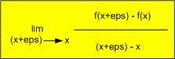

JavaScript Temelleri
Bölüm 2
Temel Bilgiler
2.6 - Nesnelerle Çalışmak
Bölüm 2 Sayfa 6
2.6.1- Nesnelerin Tanımı
Doğadaki yapılanmalar ilk bakışta karmaşık ve anlaşılması güç gibi görünebilir. Dikkatli bilimsel incelemeler, bu yapılanmaların daha basit yapıların biraraya gelmesi ile oluştuğunu göstermiştir. Doğa, göreli olarak az sayıda temel bileşenden çok sayıda nesne oluşumu ortaya çıkarmıştır. Örnek olarak karmaşık yapılı taşlar, basit yapıda minerallerden oluşmaktadır. Büyük sayıda karmaşık moleküller, az sayıda basit atomlardan oluşmaktadır. Karmaşık canlı yapıları daha basit yapıdaki hücrelerden oluşmaktadır.
Örnek olarak doğadaki taş kavramı, bize belirli bir nesne tipini anımsatır. Bu nesne tipinin iç yapısı dışa kapalıdır. İnsanların taşları kullanmaları için, iç yapılarını bilmelerine gerek yoktur. Taş olarak nitelendirilebilecek nesnelerin bazı özellikleri bulunur. Bu özelliklerden bazıları sadece değer alabilir. Örnek olarak sertlik derecesi taşlar için Mohs skalası ile verilen bir sertlik değeridir. Mineral yapısı, taşı oluşturan minerallerin adlarıdır. Yoğunluk, taşın birim hacmının ağırlığdır.Bazı özellikler ise bir yöntem olarak tanımlanır. Örnek olarak ağırlık, yoğunluk ile hacmın çarpımıdır. Buna ağırlık hesaplama metodu adı verilebilir. Bu kadar az özellik bile, taşları başka nesnelerden ayırt edilebilmelerini sağlar. Örnek olarak sıvıların yoğunluk özellikleri, ağırlık hesaplama metotları olmalarına karşın, sertlik özellikleri olmadığından taş olarak nitelendirilemezler. Sıvı bileşikler ve taşlar ayrı nesne türleridir.
Taş nesinin yapısını veya başka bir söylem ile prototipini tanımladıktan sonra, bu tanıma uygun nesne örnekleri belirlenebilir. Taş nesne örnekleri, taş sınıfının prototipine uygun özellikler taşıyan fakat bu özelliklerin değerleri birbirinden farklı olan nesnelerdir. Örnek olarak Mermer ve Granit taş sınıfına ait farklı nesne örnekleridir.
Taş ve sıvı cisimler örneğinde görüldüğü gibi az sayıda özellik tanımı bile nesnelerin birbirinden ayırt edilebilmelerine yarayabilir. Diğer taraftan, az sayıda genel özellikler, kullanılarak tanımı yapılan nesneler, birbiri ile benzerliği az olan nesneleri de aynı sınıfta olarak algılanmalarına neden olur. Örnek olarak Kireçtaşı ve Granit aynı taş sınıfında olarak algılanırlar. Daha ayrıntılı bir sınıflandırma için, alt sınıflar tanımlanabiir. Sıcakta bozunabilen taşlar için bir alt sınıf tanımlamak için taş sınıfı özelliklerine ek olarak bir bozunma sıcaklığı özelliği tanımlanabilir. Bu şekilde Kireçtaşı taş sınıfında, sıcakta bozunabilen taşlar alt sınıfında bir nesne örneği olarak nitelendirilebilir. Bilimde sınıflama yöntemi ile nesnelerin sistematik incelenmesine taksonomi adı verilir.
Nesne yönelimli programlama hakkında başlangıç bilgileri bölüm 1.6.4, nesneler bölüm 2.6 da tanıtılmıştı. Bu konuların yeniden incelenmesi yararlı olacaktır. Burada nesnelerin JavaScript programlarında uygulanma yöntemleri üzerinde durulacaktır.
JavaScript programlama dili sınıf temeline değil, prototip temeline dayanır. JavaScript programlama dilinde nesne sınıfı diye bir kavram yoktur. JavaScript programlama dilinde prototipi aynı olan nesne örnekleri vardır. Aynı prototipi paylaşan nesne örnekleri, istenirse aynı sınıfın örnekleri olarak düşünülebilir.
JavaScript programlama dilinde, nesne örnekleri yapılandırıcı fonksiyonlardan yararlanarak oluşturulurlar. Her fonksiyon yapılandırıcı fonksiyon olarak kullanılabilir. Fonksiyonlar, aynı prototipi (istenilirse bu fonksiyon sınıfı prototipi olarak da düşünülebilir) paylaşan sınıf üyeleridir. Her fonksiyonun bir prototip özelliği vardır. JavaScript programlama dilinde, sadece fonksiyonların prototip özellikleri vardır. Bunun anlamı, sadece yapılandırıcı fonksiyonların kendi nesne tiplerini (sınıf olarak da düşünülebilir) yaratabilecekleridir. Bir yapılandırıcı fonksiyonun prototip özelliğinin değeri de bir nesnedir ve yapısı, fonksiyonun yapılandıracağı nesne örnekleri ile aynıdır. Yapılandırıcı fonksiyonların prototip özelliklerinin değeri, istenirse sınıf nesnesi olarak kabul edilebilir.
Yapılandırıcı fonksiyonların prototip özelliklerinin değeri, yani bir noktada sınıfın prototip nesnesinin veya sınıf nesnesinin yapısı, yapılandırıcı fonksiyon tarafından belirlenir ve bu yapılandırıcı fonksiyon kullanılarak oluşturulacak tüm nesne sınıf örnekleri başlangıçta aynı özellik ve metotları içerirler.
JavaScript programlama dilinde, yapılandırıcı fonksiyonlar öntanımlı veya kullanıcı tanımlı olabilirler. Öntanımlı yapılandırıcı fonksiyonlar, bölüm 2.6 da belirtilmiştir. Öntanımlı yapılandırıcı fonksiyonlar ve öntanımlı yapılandırıcı fonksiyonların prototype özellikleri, tüm JavaScript yorumlayıcısının yazılımları gibi kullanıcıya kapalıdır.
Bilgisayar programcılığında, nesneler aynı doğdaki nesne kavramı gibi tanımlanıp kullanılırlar. Aradaki fark bilgisayar programlarında nesnelerin, program araçlarına göre tanımlanıp uygulanmasıdır. Bilgisayar programcılığında, nesneler, iç sıralanmanın önemli olmadığı bilgi toplulukları olarak tarif edilirler. JavaScript programlarında nesneler bir tanımlayıcı ile belirtilirler. Yani tüm programlama öğeleri gibi bir adları bulunur. Her nesneye özel olan özellikler tanımlanabilir. Nesne özellikleri, değişkenler, başka nesneler ve fonksiyonlardan oluşabilir. Nesnelerin, fonksiyon olan özelliklerine metot adı da verlir. Metotlar, girdi olarak nesne özelliklerini kullanan nesneye özel fonksiyonlardır.
Nesneler, istendiğinde, bir nesne tipinin alt tipi olarak tanımlanabilirler. Bu durumda, alt nesne tipi üst nesne tipinin tüm özelliklerini (metotlar özelliklere dahildir) kalıtımla elde eder ve bu genel tip özelliklerine kendine özgü özellikler de eklenir. Buna ana sınıf/ alt sınıf nesne hiyerarşisi adı verilebilir, fakat burada sınıf tanımı yerinde değildir, çünkü, JavaScript programlama dilinde, nesne sınıfları kavramı yoktur. Nesneler, belirli prototiplere göre üretilirler. Bu yüzden nesnelerin veri tipi olarak algılanması daha doğrudur. Yine de anlamı bilindikten sonra, nesne tipleri, nesne sınıfı olarak tanımlanabilir.
JavaScript yorumlayıcısı nesne temeline göre yazılmıştır ve tüm programlama öğeleri nesne olarak tanımlanmıştır. Tüm nesneler, generik nesne sınıfı olarak da adlandırılan Object nesne sınıfının bir alt sınıfı olarak tanımlanırlar. Bu durumda, tüm nesneler, generik nesne sınıfının özellikleri ve metotları yanında, kendi özellik ve metotlarını da içerirler.
JavaScript programlama dilinde, nesne yönetimi son derece dinamiktir. Öntanımlı olsun, kullanıcı tanımlı olsun, tüm nesnelerin prototiplerine özellik ve metot eklemeleri yapılabilir. Nesne örnekleri, yaratıldıkları prototipinin tanımladığı özellik ve metotlar yanında kendi özellik ve metotlarına sahip olabilirler. Konuların ilerlemesi ile tüm bu yöntemler görülecektir. Fakat şimdiden uyarmakta yarar bulunabilir. Her olanak olan yöntemin uygulanması gerekmez. Öntanımlı nesne türlerinin prototiplerine katkı yapmak, programların taşınabilirliğini azaltır. Kullanıcı tanımlı bir nesne tipinden örnekler yaratıldıktan sonra bu nesne tipinin protopinini değiştirmek, bu tipi ait olan eskiden üretilmiş nesne örneklerinin özellikleri ile sonradan üretilecek nesne örnekleri arasında özellik farklılıklarına neden olur. bu nedenle, ne öntanımlı bir tipin yapısının değiştirilmesi, ne de kullanıcı tanımlı bir tipin örnekleri yaratıldıktan sonra prototipinin değiştirilmesi sağlık verilmez. Veri yapısının baştan iyi tasarlanıp program sonuna kadar bu veri yapısına sadık kalınması, en güvenli yöntem olarak kabul edilir.
Nesne sınıf örneklerine yeni metotların ve özelliklerin eklenmesi, hiçbir sakıncası olmadan istendiği gibi uygulanabilir. Bir nene örneğine eklenen yeni özellik ve metotlar, sadece tanımlandıkları nesne örneği için geçerlidir. Nesne örneğinin ait olduğu sınıfın prototipi bu değişiklikyen etkilenmez ve dolayısı ile, aynı sınıfın diğer örneklerinin yapıları bu eklentileri içermez. Bir nesne sınıfına yeni özellikler eklenmesi için nesne sınıfının prototipine yeni özellikler eklenmelidir. Ancak bu şekilde yeni üretilecek sınıf örneklerinde yeni özellikler bulunabilir.
2.6.2- new Bildirimi
new Bildirimi, bir yapılandırıcı fonksiyondan yararlanılarak bu yapılandırıcı fonksiyonun prototip nesnesinin değeri olan nesnenin (sınıf nesnesinin) özellik ve metotlarını içeren bir nesne sınıf örneğinin oluşturulmasını sağlar. Kullanımı,
new YapılandırıcıFonksiyon([argümanlar])
şeklindedir. Yapılandırıcı fonksiyonlar, Object(), Number(), String(), Boolean(), Array(), Function() gibi öntanımlı altı yapılandırıcı yanında, kullanıcı tanımlı yapılandırıcı fonksiyonlar da olabilir. Tüm öntanımlı ve kullanıcı tanımlı yapılandırıcı fonksiyonları ileride teker teker ve detaylı olarak inceleyeceğiz. Örnek olarak, bölüm 4 de incelenecek olan öntanımlı Object nesne sınıfının Object() yapılandırıcı fonksiyonundan yararlanarak bir boş Object sınıfı (generik nesne sınıfı) örneğinin yaratılması için,
a = new Object();
şeklinde bir atama yeterlidir.
2.6.3 - this Saklı Sözcüğü
this Saklı sözcüğü, nesnelerde geçerli nesneyi , yani metodu çağıran nesneyi, fonksiyonlarda ise fonksiyonu çağıran kapsamı belirtir. Bu bir otomatikleştirme terimidir ve aynı çağrının değişik nesneler veya değişik kapsamlar tarafından yapılabilmesini sağlar. this Saklı sözcüğü çok güçlü bir öğedir, fakat çok dikkatli ve bilinçli olarak kullanılmalı ve denenmeden uygulamaya konulmamalıdır.
this Saklı sözcüğünün kullanımı için bir örnek, aşağıda verilen nesne literalleri örneklerinde görülebilir. Bu konuda ileride detaylı bir inceleme yapılacaktır.
2.6.4 - Nesne Özelliklerine Erişim
Nesne çalışırken, nesne özelliklerine erişim önemli olmaktadır. Çünkü bir nesne ancak özellikleri olduğunda ve özelliklerine erişim yöntemleri iyi kullanıldığında yararlı olabilir. Bunun için, nesne özelliklerine erişimin çok iyi özümsenmesi gerekir.
Nesne özelliklerine erişim için iki farklı yöntem kulanılabilir. Bunlar,
yöntemleridir. Her iki yöntem de teknik olarak birbirine eşdeğerdir.
Nokta işlemcisi iki işlenenli bir işlemcidir. Sol işleneni bir nesne değişkeni, sağ işleneneni ise, bu nesnenin bir alt nesnesi veya bir özelliği veya metodudur. Sağ işlenende hiçbir şekilde tırnak içinde ifadeler bulunamaz. Kullanımı,
nesne.özellik (veya metot)
şeklindedir. Örnek
window.document.writeln('Doğum Günü');
Bu örnekte, window nesnesinin, document alt nesnesinin writeln() metoduna erişim sağlanmaktadır.
Nokta notasyonu, nesne özelliklerine erişim için klasik sayılabilecek tüm programlama dilleri tarafından uygulanan bir yöntemdir. Bu yöntemle örnek olarak,
birParmakBoru.çap
şeklinde nesne özelliklerine erişilir. Nesne özelliklerine nokta notasyonu ile erişim için bu kitabın bir çok yerinde örnekleri bulunmaktadır.
Kullanım kolaylığına rağmen, nesne özelliklerine en iyi erişim yönteminin nokta işlemcisi olduğu söylenemez. Nokta notasyonunun sağ işlemcisinin bir ifade olmaması gerekir. Bu nedenle bazı durumlarda köşeli parantez işlemcisinin kullanımı gerekebilir.
Köşeli parantez notasyonu teknik olarak nokta notasyonu ile eşdeğer olmasına karşın nesne özelliklerine erişim için daha az kullanılır. Bu konuda standart uygulama, nokta notasyonudur. Fakat, köşeli parantez notasyonu, nokta notasyonundan daha yeteneklidir ve nokta notasyonun yetersiz kaldığı, ifadelerin çözümlenmesi gereken durumlarda köşeli parantez notasyonuna başvurulur. Köşeli parantez notasyonu aşağıda belirtilen şekilde uygulanır.
birParmakBoru['çap']
Aşağıdaki çağrı, nokta notasyonu ile hata verir:
Kimlik.özel[]
Aynı çağrı, köşeli parantez notasyonu ile gerçekleştirilebilir. Çünkü, özel işaretler karakter dizgisi verisinin parçası olarak çözümlenir ve işaret olarak yorumlanmaz.
kimlik['özel[]']
Metotların çağrılması için tek yöntem nokta notasyonudur. Köşeli parantez notasyonu ile metot çağrılmaz.
with Bildirimi, tüm nesne yönelimli yöntemleri destekleyen programlama dillerinin bildirimleri arasında görülebilmektedir. with Bildirimin kullanımı,
with (Nesne) { ... işlemler ... }
şeklindedir. Javascript programlama dilinde with bildiriminin kullanılmaması sağlık verilmektedir. Bunun birkaç nedeni bulunmaktadır:
Nelerin özelliklerine with bildirimi ile erişilmeye çalışıldığında düzensiz ve okunması zor bir kod ortaya çıkmaktadır.
Javascript programlama dilinde, with bildirimi, bildirildiği kapsam alanında yeni bir kapsam alanı açar ve işlevi tamamlandığında eski kapsam alanını yeniden oluşturur. Bu işlem, önemli ölçüde zaman kaybettiricidir ve program performansını azaltır.
Bu nedenlerden dolayı, Javascript programlarında, with bildirimine hemen hemen hiç rastlanmaz.
Aşağıda with bildriminin kullanıldığı bir uygulama örneğinin, JavaScript kodları, görülmektedir:
/* <![CDATA[ */ /* Bu Program bdelib.js Kitaplık Programını Kullanmaktadır */ var apartman = { daire1Maliki : 'Ahmet Özyağcı' }; function başlat() { with(apartman) { bilgiYaz(daire1Maliki, 'b2.6.4.3-uyg-1-sonuç-1'); } } sayfaYüklendiktenSonraÇalıştır(başlat); /* ]]> */
Sonuç :
Sonuçtan da görüldüğü gibi, with bildiriminin kullanımı, önemli ölçüde kod yazım kolaylığı sağlamakta ve kodların okunurluğunu da fazla etkilememektedir. Özellikle, programlarda kullanıcının kendi yarattığı nesnelere erişim sırasında, with bildiriminin kullanımı, kod yazımında azalma ve akıcılık sağlayabilir. Küçük programlar için, with bildiriminin performans azalttığı yönündeki sakıncanın da fazla önemi olmayabilir.
2.6.5 - Nesne Literalleri
Nesne literalleri, bölüm 2.2.6 da açıklanan, Object nesne sınıfının örnekleridir. Object nesne sınıfı en geniş olarak bölüm 4 de incelenmiştir. Bir Object nesne sınıfı (generik nesne sınıfı) örneği, tüm nesne sınıf örnekleri gibi,
a = new Object();
şeklinde, new bildirimi ve yapılandırıcı fonksiyon kullanılarak oluşturulabiilir. Bu ifadenin anlamı, yapılandırıcı fonksiyonun belirttiği özelliklere sahip bir nesne örneğinin yaratılarak a değişkenine atanmasıdır.
JavaScript programlama dilinde, Object() yapılandırıcı fonksiyonu, nesne örneklerinin new bildirimine gerek duyulmadan oluşturulabildiği iki nesne sınıfından biridir. Diğeri de dizi sınıfıdır. Generik nesne sınııfı örneklerinin oluşturulması için nesne başlatıcısı olarak adlandırılan, kapsam sınırlandıcıları {} dan yararlanılabilir.
a = {} ;
Bu ifadenin sonucu new bildirimi ile generik nesne sınıfı örneği oluşturulması ile aynıdır. Her iki yöntemin sonucunda, a değişkenine generik nesne sınıfının (Object nesne sınıfının) bir örneği atanmış olur. Atanmaış olan generik nesne sınıfı örneği, sadece ana sınıf olan Global JavaScript Nesnesinin ve örneği olduğu Object nesne sınıfının prototip nesnesinde belirtilen özellik ve metotlara sahiptir. Bunun için, yaratılmış olan bu genel Object nesne sınıfı örneğine, boş bir nesne literali adı verilir.
Bir sınıfın boş bir örneğini yaratmak hiç bir işe yaramaz. Birbirinden farklı olmayan binlerce aynı sınıftan boş nesne örneği olabilir, fakat birbirlerinden farkı olmadığından önemli değillerdir. Önemli olmak, özel olmak, özgün olmakla gerçekleşir.
Boş bir nesne literalinin özgün bir nesne literali (generik nesne sınıf örneği) olması için, bu nesne örneğine, aşağıda görüldüğü gibi yeni bir özellik eklenebilir:
a.isim = 'Ahmet Eroğlu';
Boş olarak yaratılan bir generik nesne sınıf örneğine veya eş anlamlı olarak bir nesne literaline, aşağıda kodları verilen bir JavaScript programı ile bir yeni özellik eklenmiş ve bu programın iliştirildiği sayfada verdiği sonuçlar aşağıda gösterilmiştir:
... kimlik = {}; kimlik .ad = 'Selcan'; sonuçYaz('kimlik.ad = ', kimlik.ad, 'b2.6.5-uyg-1-sonuç-1'); ...
Program Sonucu :
Boş bir generik nesne sınıfı örneğine yeni bir özellik atandığında, bu generik nesne örneği artıl boş generik nesne örneği değil, özgün bir generik nesne sınıf örneği veya eş anlamlı olarak özgün bir nesne literalidir. Kendine özgü bir isim özelliği vardır ve bu özelliğe bir değer atanmıştır. Bu özelliğe, nokta veya köşeli parantez işlemcilerinden yararlanarak erişilebilir. Örnek olarak bu özelliğin değeri, aşağıda görüldüğü gibi, başka bir değişkene atanabilir :
b = a.isim;
Nesne özellikleri olarak fonksiyonlar da tanımlanabilir. Bir nesnenin değeri fonksiyon olan özellğine metot adı verilir. Metotlar çoğunlukla nesne özelliklerini veri olarak alarak hesaplamalar yaparlar. Bir nesneye metot bağlanması iki yöntemle gerçekleştirilebilir. İlk yöntem, aşağıda görüldüğü gibi, nesne özelliğine bir fonksiyon literali (anonim fonksiyon) atanmasıdır:
a.isimGöster = function() { alert(this.isim); }
Bir başka yöntem de, fonksiyonu dışarda tanımlaması ve nesne özellğine atanmasıdır :
function isimBelirt() { alert(this.isim); } a.isimBelirt = isimGöster;
Daha önce de görüldüğüne göre, bir fonksiyon bir değişkene atanırken () işlemcisi kullanılmaz. bu şekilde değişkene fonksiyona bellekte erişim sağlayan bellek işaretçisi (pointer) atanmış olur. Aksi halde, değişkene fonksiyonun döndürdüğü değer atanmış olur ki bu hataya neden olur.
Metodun içindeki this saklı sözcüğü, metodu çağıran kapsama işaret eder. Metodu çağıran kapsam a nesnesi olduğundan, this a nesnesini ifade eder.
Metot nesne örneğine bağlandıktan sonra, aynen nesnenin diğer özellikleri gibi çağrılabilir:
a.isimBelirt();
Metodu çağırırken fonksiyon çağırma işlemcisi () nin kullanılması gerekir. Çünkü burada, fonksiyonun döndüreceği değere gereksinme duyulmaktadır.
Bir nesne literali anlam olarak, bir generik nesne sınıfı örneği olsa bile, nesne literali bir literaldir ve tek defada girilebilecek bir veri olmalıdır. Bunun için nesne literalleri, aslında tek defada ve kapsam sınırlandıcıları {} arasında oluşturulurlar. Genel yöntem,
nesne Literali (Object sınıfı nesne örneği) değişken adı = {özellik1 : değer1, özellik2 : değer2 , özellik3 : değer3 , ... özellikN : değerN};
şeklindedir. Bir nesne literali örneği ile, özelliklerine erişim ve metotlarını kullanım yöntemi bir JavaScript programı ve iliştirildiği sayfada verdiği sonuç, aşağıda görülmektedir:
... yarımParmakBoru = { çap : 2.54 / 2, etKalınlığı : 2, dışKesit = function() { var dışÇap = this.etkalınlığı*2 + this.çap; return dışÇap * dışÇap * Math.PI / 4; } }; sonuçYaz('yarımParmakBoru.çap = ', yarımParmakBoru.çap, 'b2.6.5-uyg-2-sonuç-1'); sonuçYaz('yarımParmakBoru.dışKesit = ', yarımParmakBoru.dışKesit(), 'b2.6.5-uyg-2-sonuç-2'); ...
Program Sonucu :
Nesne literalleri, diğer sınıf örnekleri gibi kullanılırlar. Aynı yapıda başka bir örneğe gereksinme duyulmayacak durumlarda, örnek olarak aşağıda göreceğimiz fonksiyon kitaplığı gibi uygulamalarda, nesne literallerinin kullanımı uygundur. Fakat, aynı yapıda ikinci bir nesne literaline gereksinme duyulduğunda, nesne literali paradigmasının yeterli olmadığı hissedilir. Yapısı birinci nesne literali ile aynı, fakat özelliklerinin değerleri değişik olan İkinci nesne literalinin oluşturulabilmesi için, birincisinin yapısının aynen yeniden belirtilmesi gerekir. Bu da gereksizi bir yazım yükü anlamına gelir, üstelik ayanı yapıda olmalarına karşın, iki nesne literali arasında bir bağ yoktur. Her ikisi de sadece generik nesne sınıfı örnekleridir. İkinci nesne literali,
birParmakBoru = { çap : 2.54, etKalınlığı : 2, dışKesit : function() { var dışÇap = this.etkalınlığı*2 + this.çap; return dışÇap * dışÇap * Math.PI / 4; } };
şeklinde yaratılabilir. Fakat bunun daha kolay başka bir yolu da vardır. Herşeyden önce, eğer bir yapının birden çok örneğine gereksinme duyuluyorsa, artık o yapı için, bir sınıf tanımına gereksinme olmuş demektir. Oysa, yarımParmakBoru ve birParmakBoru nesneleri, Object nesne sınıfının özgün özellikler eklenmiş sınıf örnekleridir. Oysa bu özellikler bir yapılandırıcı fonksiyonda tanımlanmış olsaydı, her defasında aynı yapının tanımına gerek olmadan, istendiği kadar nesne örneği üretilebilirdi. Üstelik üretilecek nesne örneklerinin aynı sınıfı paylaşmak (prototipleri aynı olmak) gibi bir ortak özellikleri olurdu. Kullanıcı tanımlı nesne sınıflarının açıklanması ileride detaylı olarak yapılacaktır.
2.6.6 - İçiçe Yuvalanmış Nesneler
Nesneler istenildiği kadar derinlikte içiçe yuvalanabilirler. Yani, bir nesnenin özelliği bir başka nesne olabilir. İçiçe yuvalanmış nesnelerle çalışılması fazla kullanışlı değildir. Bu nedenle bir, en çok iki düzey derinlikte yuvalanmış nesneler yapılandırılır. İçiçe iki nesnenin kullanıldığı bir nesne literalini içeren bir örneğin JavaScript kodları ve iliştirildiği sayfada verdiği sonuçlar, aşağıda, görülmektedir.
/* <![CDATA[ */ /* Bu Program bdelib.js Kitaplık Programını Kullanmaktadır */ var deney = { deneyNo : 12, deneyTarihi : '12.08.1986', parametreler:{ pH : 5.6, BOD : 3.2 } }; function başlat() { var günlükDeney = deney; bilgiYaz(deney.parametreler.pH, 'b2.6.6-uyg-1-sonuç-1'); } sayfaYüklendiktenSonraÇalıştır(başlat); /* ]]> */
Günlük Deney pH Değeri Sonucu :
Uygulama sonucundan da görülebileceği gibi, nesnelerin içiçe yuvalanma derinliği arttıkça, çağrılma kodları da tren katarı gibi uzamaktadır. Bu açıdan içiçe yuvalamayı, akla yakın bir derinlikte bırakmak uygun olacaktır.
2.6.7 - Fonksiyon Kitaplıkları
Yeni bazı incelemeler, çok sayıda fonksiyon içeren uygulamalarda asılı fonksiyon (hanging functions) olarak da adlandırılan serbest fonksiyonların yönetiminin güçleştiğini ve bu fonksiyonların konularına göre çeşitli nesne literallerinin metotları olarak yerleştirmenin daha düzenli olacağını, istenirse, global değişkenlerin de bu kitaplıklara konularak dıştan bir değer alması gerekmeyen birimler oluşturulabileceğini belirtmektedirler. Aşağıda bu ile ilgili bir örneğin, JavaScript kodları verilmiştir.
/* <![CDATA[ */ /* Bu Program bdelib.js Kitaplık Programını Kullanmaktadır */ var geo = { türev : function (a, b, eps) { return (a(b + eps) - a(b)) / ((b + eps) - b) ; } }; function başlat() { var q = fonction(x) { return x * x + 5 * x; } bilgiYaz(geo.türev(q, 2, 0.0000001), 'b2.6.7-uyg-1-sonuç-1'); } sayfaYüklendiktenSonraÇalıştır(başlat); /* ]]> */
Sonuç :
JavaScript kodları yukarıda görülen örnekte, bir a(x*x+5*x) fonksiyonunun, b [2] noktasındaki türevinin yaklaşık değeri hesaplanmaktadır. Türevin geometrik yaklaşımı, bir geo global nesne literalinin bişr metodu olarak tanımlanmıştır. Burada geo global nesne literali, bir fonksiyon kitaplığı olarak hareket etmektedir.
Türevin hesaplandığı türev()fonksiyonu,

olarak hesaplanmaktadır.
geo Fonksiyon kitaplığından türev fonksiyonun çağrılması, geo.türev() şeklinde gerçekleştirilmektedir. Bu kullanım şekliyle, JavaScript global nesne literali fonksiyon kitaplıkları, Java paketlerine (packages) benzemektedir. Bu kitaplıkların, geo.js gibi ayrı bir JavaScript dosyasına yerleştirilip, kullanılacakları sayfa ile ilişkilendirilmeleri, her konu için ayrı bir fonksiyon kitaplığı oluşturulabileceğini belirtir ki bu olağanüstü bir olanak olarak düşünülebilir.
Son günlerde, programlarda kullanılacak tüm global değişkenlerin, asılı (global) bir nesne literalinin özellikleri, fonksiyonların da aynı nesne literalinin metotları olarak tanımlanıp kullanılması üzerinde, güçlü eğilimler görülmektedir. Bunun bir uygulama örneği de yukarıdaki programda görülmektedir.
Global değişkenlerin, asılı olarak değil de bir asılı nesne literalinin özelliği olarak tanımlanması, sadece bu global değişkenin değerinin yanlışlıkla değiştirilme olasılığını azaltabilecek iyi bir önlem olarak kabul edilebilir. Diğer yönden, bir global değişkenin asılı (serbest) global değişken olarak değil, başka bir global nesne literalininin özelliği olarak tanımlanması, bu değişkenin global olmak özelliğini ortadan kaldırmaz. Sadece, açık global olmak yerine dolaylı olarak tanımlanmış (implied) global haline getirir. Prensip olarak her iki tür global de, kendilerine gereksinme duyan fonksiyona argümandan başka bir şekilde giriş yapıyorlarsa, fonksiyonun taşınabilirliğini kesinlikle ortadan kaldırırlar. Programlarda açık veya gizli global değişken kullanılmasından kaçınılması gerekir.
Global fonksiyonların bir global nesne literalinin metotları olarak tanımlanması, konulara göre düzenlenmiş fonksiyon kitaplıkları organizasyonuna olanak sağlaması açısından çok yararlıdır. Buna rağmen bu fonksiyonlara erişim için geo.türev() örneğine olduğu gibi, ek olarak kitaplık isminin de eklenmesi, ek bir yazma yükü getirmektedir. Diğer taraftan global foksiyonların bir performans eksilmesi yarattığı da bugüne kadar belirtilmememiştir. Bu nedenle, ek yazılım yükünü doğrulayabilecek tek olgunun, organizasyon kolaylığı olabileceği düşünülebilir. Yine de, kitaplık fonksionlarının tek bir kitaplık nesnesinin metotları olarak tasarlanması, çok düzenli ve uygulanması sağlık verilebilecek olan bir yazılım stili olacaktır. Günümüzde fazla yaygın olmayan bu yazılım stilinin uygulanması kişisel seçime bağlı kalmaktadır.